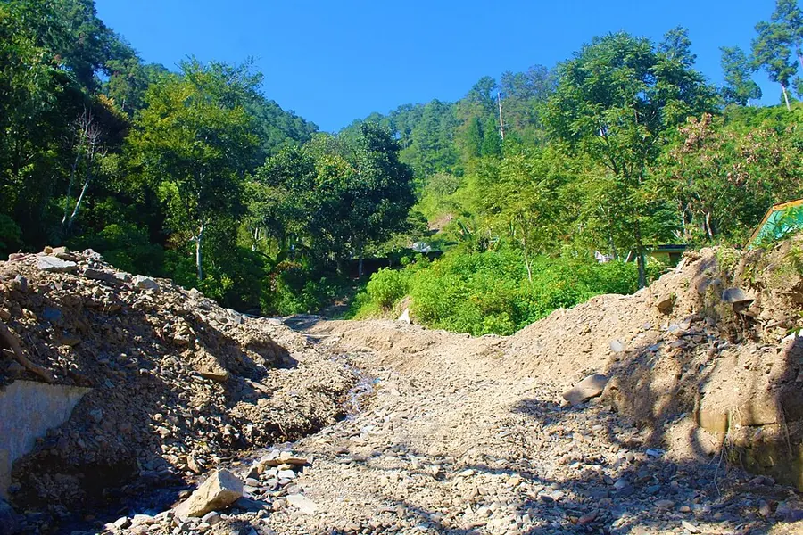

Edukasi kebencanaan · Peta ekspedisi
Mengenal dan Menghadapi Longsor
Anggap halaman ini peta jalur. Ada lima pos yang dilewati satu per satu, lalu satu titik kumpul berisi nomor darurat. Gulir ke bawah dan ikuti jalur oranye.
Mulai dari Pos 01
01 · Pengertian
Apa itu longsor dan apa penyebabnya?
Longsor terjadi ketika tanah di lereng yang labil bergerak turun dan menimbulkan bencana, terutama bagi warga yang tinggal di tempat lebih rendah. Badan Geologi menyebutnya gerakan tanah longsor.
Pemicu menurut sumber resmi:
- Hujan intensitas tinggi. BNPB menyebut hujan yang berlangsung beberapa hari. Badan Geologi menjelaskan, hujan lebat menambah tekanan air di dalam tanah dan menurunkan kekuatannya sehingga lereng gagal.
- Gempa bumi. Getarannya dapat melemahkan kekuatan lereng.
- Kegiatan manusia, seperti pemotongan lereng dan peledakan di area tambang.
Yang memengaruhi mudah tidaknya lereng longsor:
- Kemiringan dan bentuk lereng
- Kondisi geologi
- Kondisi air (hidrologi) di lereng
- Perubahan tata guna lahan
- Kegagalan konstruksi
- Saluran air permukaan belum baik
 VIDEO · POS 01
VIDEO · POS 01Sumber: BNPB, "Tanah Longsor" (27 Des 2017); Kementerian ESDM/Badan Geologi, "Curah Hujan Tinggi, Masyarakat Diminta Waspadai Gerakan Tanah Longsor" (6 Feb 2018); Kementerian ESDM/Badan Geologi, "Longsor Terjang Desa Pasirlangu, Badan Geologi Ingatkan Ancaman Longsor Susulan" (25 Jan 2026).
02 · Waspada
Tanda-tanda bahaya
Warga yang tinggal di perbukitan atau dekat tebing diminta mengenali tanda awal berikut dan terus memantau keadaan sekitar. Ketuk tiap simbol legenda untuk membuka kartunya.

Perhatikan retakan yang sejajar dengan tebing (BNPB). Foto: tepi jalan amblas dan talud runtuh, Kebumen. SATELIT BM9, CC BY-SA 4.0.

Mata air baru muncul, atau air mata air dan sumur tiba-tiba keruh. Foto: aliran longsoran di lembah, Simalungun. ButetSinaga, CC BY-SA 4.0.

Pohon atau tiang yang tadinya tegak mulai miring. Foto: lereng bukit longsor di atas rumah warga, Kebumen. SATELITBM, CC BY-SA 4.0.

Kerikil atau tanah kecil mulai jatuh dari tebing. Foto: bekas longsor di lereng hutan tepi Danau Lau Kawar. Ivens88, CC BY-SA 4.0.

Bila terdengar gemuruh dari dalam tanah, jangan menunggu: lanjut ke Pos 04. Foto: sawah bertingkat di lereng, Selogriyo. Heri nugroho, CC BY-SA 4.0.
Sumber: BNPB, "Tanah Longsor di Tapanuli Selatan Telan Dua Korban Meninggal" (23 Feb 2025); Badan Geologi, "Tanah Longsor Kembali Terjadi di Ponorogo, Masyarakat Diminta Waspada" (9 Apr 2017).
03 · Sebelum
Persiapan sebelum longsor
- Waspadai hujan dengan curah tinggi dan simak informasi tentang hujan serta kemungkinan longsor. BNPB menyebut radio sebagai salah satu sarana.
- Siapkan makanan dan minuman siap saji, senter beserta baterai cadangan, uang tunai secukupnya, dan obat-obatan sesuai kebutuhan.
- Jangan menebang tanaman keras di lereng, jangan menggali lereng secara tegak lurus, dan atur aliran air permukaan di lereng.
- Bersiaplah mengevakuasi diri begitu pihak berwenang menginstruksikannya.


BNPB (23 Feb 2025) mengimbau warga mengevakuasi diri ke tempat yang lebih aman bila hujan intensitas tinggi berlangsung lebih dari satu jam.
Sumber: BNPB 2017; Badan Geologi 2017; BNPB 2025 (judul seperti di Pos 01 dan Pos 02).
04 · Saat
Saat longsor terjadi
- Di dalam rumahBila terdengar suara gemuruh, segera keluar menuju tempat lapang yang tidak terhalang.
- Di luar rumahCari tempat lapang dan perhatikan sisi lereng atau tanah yang longsor.
- SelaluIkuti arahan BPBD dan petugas setempat.
 VIDEO · POS 04
VIDEO · POS 04Sumber: BNPB, "Tanah Longsor" (27 Des 2017).
05 · Sesudah
Setelah longsor, jangan buru-buru pulang
- Jangan segera kembali ke rumah. Daerah bencana dan sekitarnya masih berpotensi longsor susulan, terutama saat dan setelah hujan deras, sehingga warga diminta mengungsi ke lokasi yang aman.
- Bila diminta membantu evakuasi, pakai sepatu khusus dan peralatan keselamatan, pastikan pijakan cukup kokoh, jangan memperburuk keadaan di reruntuhan; atau tunggu petugas.
- Badan Geologi mengingatkan petugas agar tidak melakukan penanganan atau pencarian korban saat dan sesudah hujan deras karena risiko longsor susulan masih tinggi.
Sumber: BNPB 2017; Badan Geologi 2017; Badan Geologi 2026.
Titik kumpul
Kontak darurat
Aparat desa dan BPBD kabupaten/kota. Kontak BPBD Provinsi Jawa Barat di bpbd.jabarprov.go.id.
Yang belum disediakan aplikasi ini
SIAGA Longsor belum memberikan peringatan dini maupun perintah evakuasi. Prediksi harian masih percobaan. Tujuan dan rute evakuasi antardesa belum tersedia. Ikuti arahan BPBD atau petugas setempat.